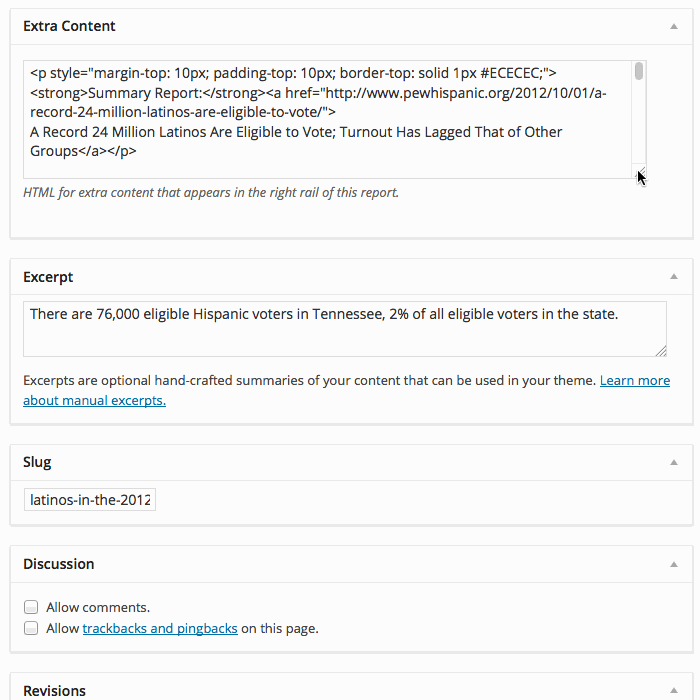

The Pew Research Center & WordPress
How I Spent the Last 5 Years Playing with WordPress and Building PewResearch.org
What will this talk cover?
- Background on Pew Research Center
- Redesigns
- Cool Stuff We've Built
About Me
- Graduate of AiPH
- Formerly at USNews.com
- Lead Developer at PewResearch.org
About the Pew Research Center
Mission
The Pew Research Center is a nonpartisan fact tank that informs the public about the issues, attitudes and trends shaping America and the world.
The center’s mission is to generate a foundation of facts that can enrich the public dialogue and support sound decision-making. As a neutral source of data and analysis, Pew Research does not take policy positions.
pewresearch.org/about/mission-and-history/
History
| Project | Founding |
|---|---|
| People-Press.org | 1993 |
| Journalism.org | 1997 |
| PewInternet.org | 1999 |
| PewForum.org | 2001 |
| PewHispanic.org | 2001 |
| PewGlobal.org | 2001 |
| PewResearch.org | 2004 |
| PewSocialTrends.org | 2005 |
Founding of the Center
In 2004, the Pew Research Center was founded to house all of the separate projects and share resources.
My First Day…
(HR Paperwork)
My Second Day
- How are the sites built?
- What was the goal of the websites?
- What were the biggest pain points of the websites?
What technology was powering the websites?
- 5 were running a home-grown CMS (PHP/MySQL)
- 1 was running on Sitecore (.NET)
- 1 was running on an old version of Drupal (PHP/MySQL)
- 1 was beginning a migration to Ektron (.NET)
What were we publishing?
- Reports - An executive summary with a link to a PDF
- Media Mentions - Links to noteable external articles
- Datasets - Zip archives of survey data
- Occasional Special Features
- Archives
Technical capabilities of CMS users?
"What format do you want the image in? Word or Excel?"
— Russell Heimlich (@kingkool68) January 31, 2011My Goal
To eliminate technical barriers so researchers could spend more time researching and less time fiddling with the website.
The Microsoft Access Incident

We needed a proper CMS
Which one to choose?
- Enterprise Solution?
- Open Source?
- Home grown/roll our own?
The more you pay, the crappier the CMS

Crazy idea!
What if we used WordPress?
Spoiler Alert!
We chose WordPress.
- Friendly interface
- Ease of use
- Flexibility
- Large Community
- It clicked with me!
Redesigning Pew Global
Redesign First,
CMS Migration Second
Pew Social Trends
People Press
Pew Hispanic
Pew Research
A new standard
- Updated look
- Responsive
- Web fonts via TypeKit
- Clear content hierarchy
- White space!
Hired a 2nd Developer, Adam Nekola
Refactoring Needed
- From single mammoth stylesheet to CSS chunks
- Centralize common theme files
- Made new features interoperable across sites
- Update older sites, use new look for new site migrations
Pew Religion
Journalism
Pew Internet
We Did It!
And with the launch of @pewinternet today all of the @pewresearch web sites are now running on @WordPress with responsive themes.
— Russell Heimlich (@kingkool68) February 12, 2014Scaling
Building a “big boy” website
How can we…
- Handle thousands of visitors a day?
- Keep server response times low?
- Make caching transparent?
Run everything through a CDN
Advantages of a CDN
- HTML/CSS/JavaScript/Images are cached on servers closer to the visitor
- If our servers go down, the content is still accessible
- CDN has API to flush URLs when they change
Stats
- 80GB - 115GB of traffic per day
- < 500ms average response time
- In one hour, peaked 87,661 visits
- In one minute, peaked 1,669 visits
Taxonomies
Topics Drive Automated Related Reports Feature
Multi-section Reports
Reordering Child Posts
automatic Table of Contents
Report Materials
Supplemental Materials for a Report
Started out doing this with custom fields
then editors needed more flexibility
Empty boxes get abused
We came up with something better
Quizzes
Science & Technology Knowlege Quiz
Adding Questions to a Quiz
{kind=link}
Adding Answers to a Quiz Question
{kind=link}
Quiz Response Stats
Quiz Question Breakdown
Journalism’s Daily Briefing Tool
Old Daily Briefings
Rethinking How Daily Briefings Work
Leverage Taxonomies for Organization
Making Data Entry Easier

Associating News Items to a Daily Briefing
Making an Email Version
Old Way of Producing Daily Briefings
- Take a whole day of someone's time
- No archive
- Limited by the CMS
New Way of Producing Daily Briefings
- Takes 30 minutes
- Multiple archives
- CMS enhances the process
Landing Pages
First, we did this…
Which evolved…
We needed a landing page for our LGBT series of reports.
- Content from across the Pew Research Center
- Frequently changing as new content is published
- Editorially-controlled ordering
Widgets to the rescue?
- This would require additional sidebars
- Managing the widgets would mean navigating to different sections of the admin (confusing)
What if we wanted other landing pages?
We would end up with sidebars out the wazoo!
We Needed Something Better!
So we built it…
and we call it
WP Gizmos
WP Gizmos are like per-post/page/whatever widgets.
WP Gizmos
- Drag and drop reordering
- Different types can be mixed and matched
- Add as many as you want
- Stay on the same page you're editing
- Flexible!
Gizmo Metabox
Editing a Gizmo

Available on GitHub
Infinite Scroll
We have two types of pages…
- Pages to read
- Pages to help you find something to read
Archives are pages aimed to help you find something to read.
At the bottom of archive pages you see this…
Wouldn't it be better to see more posts?
- Using JavaScript we can fetch the next page of posts in the background
- No need to duplicate archive logic in PHP and JavaScript
- The back button works!
Available on Github
Data Trends
Media Library Enhancement
Plugins
We have 87 Plugins
Which plugins aren't activated?
Which site has a plugin active?
Custom Feeds
In Conclusion
WordPress is awesome!
(Textfields of HTML blobs suck)